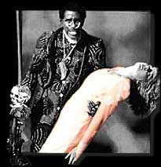
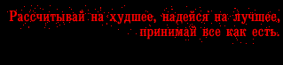

Первые общенациональные гастроли, впервые он - хэдлайнер рок-н-ролльных фестивалей… Алан Фрид пригласил его в фильм "Мистер рок-н-ролл", Хокинс спел на съемочной площадке песню "Бешенство" ("Frenzy"), одетый в трико в обтяжку с лицом, вымазанным ваксой… При монтаже сцена выпала из фильма.  На одном из сборных концертов ради пущего веселья вокальная группа "Бродяги" ("The Drifters") взялись вынести его гроб на сцене. В гробе был замочек; дабы он не защелкивался, Хокинс вставлял в него спичку. Почему-то в тот раз ему пришлось попросить сделать это "Бродяг". С обязательностью, свойственной представителям искусства, они этого не сделали. Хокинс же считал, что всему виной - корявое чувство закулисного юмора.ХОКИНС: Они подождали терпеливо, пока я не залезу в гроб, закрыли крышку - и чертова штуковина захлопнулась. Вот тогда я на собственном опыте смог убедиться, что воздуха в гробе хватает на три с половиной минуты. Когда я обнаружил, что не могу выбраться из гроба, я так перепугался, что заплакал! Я проклинал все! Я молился! На мне был белый хвостатый фрак, перчатки, цилиндр, трость… И я начал брыкаться, и это меня спасло. Гроб свалился со стойки и развалился в щепки… Публика решила, что все так и задумано, а я напрочь забыл все слова. Но с того дня я бросался с кулаками на каждого встреченного "бродягу". Троих из них я поколотил, и всюду выглядывал Бена И.Кинга. На последующие два концерта они вообще не пришли. Мы снова начали разговаривать только лет через семь. Концертные выступление Хокинса оставались хорошо распланированным скандалом, но фурор, который они производили, никак не мог закрепиться хитпарадным успехом его пластинок. "Эпик-Коламбиа" не возобновили контракт, с 1958 года Хокинс снова вернулся к сотрудничеству с мелкими фирмами. И, значит, его следующие синглы могли попасть в хит-парады только теоретически. Практически - не попали. Хокинс познакомился с певицей Пэт Ньюборн, которая была предназначена ему самой судьбой: ведь ее прозвище "Shouting'" - "Кричащая".  Убедившись, что на родине им не пробиться к настоящему успеху, "Вопящий" Джей и "Кричащая" Пэт отправились пытать счастье в Японии, а осели на Гавайях, где открыли свой кабачок.ХОКИНС: Я на десять лет удалился в Гонолулу, поскольку понял, что мир не готов меня понять. Между прочим, слушая психоделически обогнавший свое время сингл "Я слышу голоса" ("I Hear Voices", 1962), приходишь к тому же выводу. Всего три года спустя ребята в Калифорнии уже принялись бы скупать эти зыбкие звуки-глюки в более-менее массовом порядке. "Кричащая" Пэт кинулась на него с ножом, когда обнаружила, что Джей встречается с новой невестой, и гавайская идиллия кончилась. Нина Симоун записала свой вдумчивый вариант "На тебе мое заклятье" - и в ее неироничном исполнении песня тут же стала хитом. (Собственно, именно благодаря этому, а не авторскому, исполнению песня обрела свою вечную жизнь. Благодаря Симоун, британцы узнали и влюбились в две песни: "Дом восходящего солнца" и " Но успех песни в 60-х озарил и имя Хокинса. Он вновь отправился на гастроли, в Англии и по всей Европе его встречали как знаменитость… Теле-шоу, радио, интервью. В 1965м для маленькой английской фирмы "Planet" он записал ритмэндблюзовый альбом, минимально-экстравагантного по его меркам: "The Night And Day Of Screaming Jay Hawkins"... В конце десятилетия он вновь взят на мажор-фирму: "Philips". В 1969м выходит альбом "Это еще что?" ("What That Is?"). На обложке - гроб, в гробу - "Вопящий" Джей Хокинс, один глаз его - открыт… Журналисты частенько определяли манеру пения Хокинса как "каннибальскую" - новая песня "Пиршество Мау-Мау" ("Feast Of Mau Mau") демонстрировала, что это не гипербола. Но любые ужасти меркли рядом с другой песней. Открывая ее, Хокинс обвинял эстраду в уходе от настоящих проблем: "Дамы и господа. Большинство людей записывают песни о любви, разбитых сердцах, одиночестве, безденежье… Но о настоящей боли никто не пишет песен. Мы с группой только что вернулись из госпиталя Джеролл, где мы как раз застали человека в таком состоянии. И песню мы назвали "Запорный блюз" (Constipation Blues). Название песни - еще полбеды. Соответствующий текст снабжен на потеху публике всеми кряхтениями и оханьями, какие прежде звучали лишь в уединении несчастных. И напоследок: "Плюх - теперь мне хорошооооооооооо!" "Запорный блюз" слегка поддразнил общественное мнение, но не помог распродать тираж. |